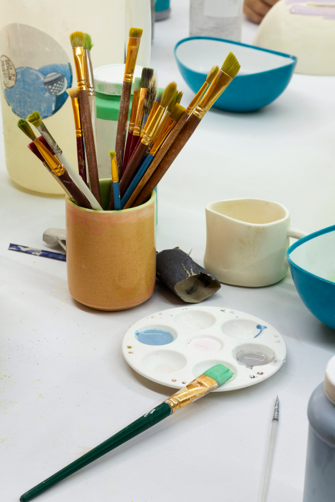
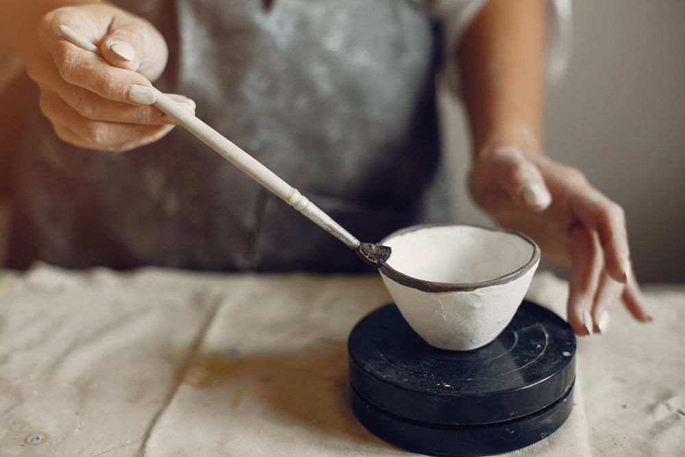
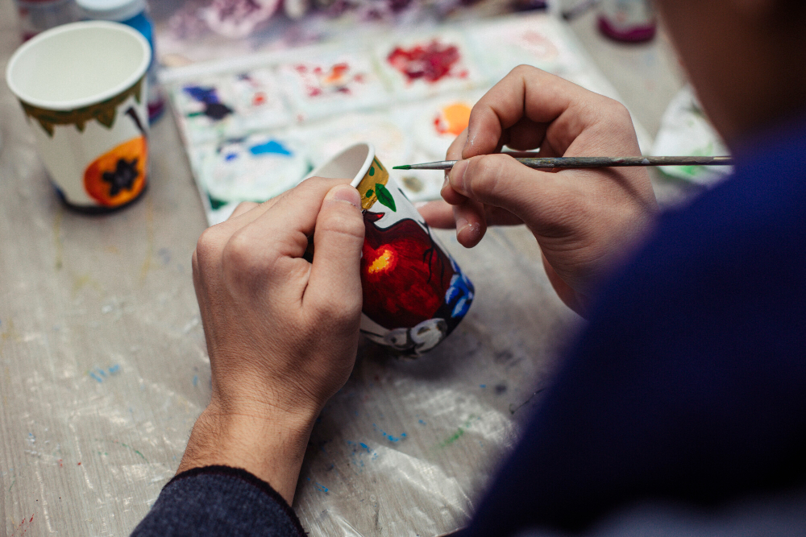

Malowanie ceramiki - krok po kroku
Nie musisz nic umieć i nic przynosić. Przychodzisz jak do zwykłej kawiarni, a wychodzisz jak z pracowni - z własnoręcznie ozdobioną ceramiką, którą my szkliwimy i wypalamy.



Kawiarnia + pracownia w jednym
Bez zapisów w tygodniu
Od wtorku do piątku po prostu wpadasz, zamawiasz kawę i siadasz do malowania. W weekendy i na większe grupy polecamy rezerwację stolika - sala potrafi się zapełnić.
Wszystko w cenie naczynia
Płacisz tylko za wybrane naczynie (od 39 zł). W cenie masz farby podszkliwne, pędzle, gąbki, szablony, fartuch oraz szkliwienie i wypał w naszym piecu. Bez limitu czasu w dni powszednie.
Krok po kroku
-
Wybierz ceramikę
Znajdź swój ulubiony kubek, talerz, miskę lub inną ceramiczną formę do pomalowania.
-
Wybierz kolory
Skorzystaj z bogatej palety barw i wybierz odcienie, które najlepiej oddadzą Twój pomysł.
-
Zamów coś pysznego
Usiądź wygodnie i wybierz kawę, herbatę lub lemoniadę z ciastkiem.
-
Maluj i twórz
Puść wodze wyobraźni i stwórz wyjątkowy, własnoręcznie zdobiony przedmiot - bez względu na poziom doświadczenia.
-
Wypalamy Twoje dzieło
Po zakończeniu pracy zabezpieczymy ceramikę i przygotujemy ją do profesjonalnego wypalenia.
-
Odbierz gotowy produkt
Po kilku dniach Twoja ceramika będzie gotowa do odbioru.
Najważniejsze zasady
Czas
Malowanie zajmuje zwykle 1-2 godziny. W dni powszednie nie ma limitu, w weekendy prosimy o zmieszczenie się w 2,5 godziny.
Dzieci
Malować może każdy od ok. 4 roku życia. Mamy fartuszki, zmywalne farby i niską półkę z naczyniami dla najmłodszych.
Grupy i urodziny
Dla grup 6+ osób (urodziny, wieczory panieńskie, integracje) przygotujemy salę na wyłączność - napisz do nas przez kontakt.